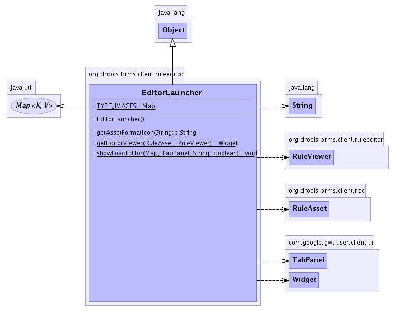

org.drools.brms.client.ruleeditor
Class EditorLauncher
java.lang.Object
 org.drools.brms.client.ruleeditor.EditorLauncher
org.drools.brms.client.ruleeditor.EditorLauncher
public class EditorLauncher
- extends java.lang.Object
This launches the appropriate editor for the asset type.
This uses the format attribute to determine the appropriate editor, and
ALSO to unpackage the content payload from the generic asset RPC object.
NOTE: when adding new editors for asset types, this will also need to be enhanced to load
it up/unpackage it correctly for the editor.
The editors will make changes to the rpc objects in place, and when checking in the whole RPC
objects will be sent back to the server.
-
- 
|
Method Summary |
static java.lang.String |
getAssetFormatIcon(java.lang.String format)
Get the icon name (not the path), including the extension, for the appropriate
asset format. |
static com.google.gwt.user.client.ui.Widget |
getEditorViewer(RuleAsset asset,
RuleViewer viewer)
This will return the appropriate viewer for the asset. |
static void |
showLoadEditor(java.util.Map openedViewers,
com.google.gwt.user.client.ui.TabPanel tab,
java.lang.String uuid,
boolean readonly)
This will show the rule viewer. |
| Methods inherited from class java.lang.Object |
clone, equals, finalize, getClass, hashCode, notify, notifyAll, toString, wait, wait, wait |
TYPE_IMAGES
public static final java.util.Map TYPE_IMAGES
EditorLauncher
public EditorLauncher()
getEditorViewer
public static com.google.gwt.user.client.ui.Widget getEditorViewer(RuleAsset asset,
RuleViewer viewer)
- This will return the appropriate viewer for the asset.
getAssetFormatIcon
public static java.lang.String getAssetFormatIcon(java.lang.String format)
- Get the icon name (not the path), including the extension, for the appropriate
asset format.
showLoadEditor
public static void showLoadEditor(java.util.Map openedViewers,
com.google.gwt.user.client.ui.TabPanel tab,
java.lang.String uuid,
boolean readonly)
- This will show the rule viewer. If it was previously opened, it will show that dialog instead
of opening it again.